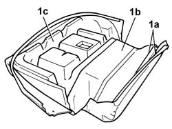
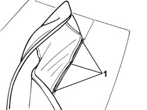
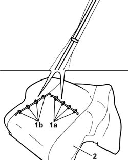

7050D35 LEFT rear seat BACKREST COVER, (two seats) - R.R. with backrest removed
- Path
- Procedures > 70 FITTINGS > 7050 REAR SEATS > 7050D REAR SEAT COVERS/UPHOLSTERY > 7050D35 LEFT rear seat BACKREST COVER, (two seats) - R.R. with backrest removed
- Kind
- repair procedure (removal / refitting; the operation number is the code)
- Applies to
- all engines; all production periods
- Interactive page
- https://sloeber94.github.io/elrnDB-fPnd/en/#/2753298
Applies to: all engines; all production periods
 Removing
Removing
 Refitting
Refitting7050A53 Split, (two seater), BACKREST COVER - Replacement
1. Open the two retaining rods (1a) and release the rear section of the cover (1b) from the upholstery (1c).

Applies to: all engines; all production periods
1. Starting from the left or right side area, lift up the cover and cut the fastening clips.

Applies to: all engines; all production periods
1. Cut the fastening clips in the centre (1a) and side (1b) areas.
2. Separate the squab cover from the padding.

Applies to: all engines; all production periods
Refitting
RemovingCheck that the cover is intact and that there are no signs of wear or cuts.
Fit the trim to the padding.
Using the special pliers, cut the new clips starting from the centre sections and continue with the two side areas.
 | Name | Country |
|---|---|---|
- | Pliers for metal points | 1.878.017.001 |
Fit the cover in the rear area and connect the retaining rods.
Check that there are no puckers or folds in the cover.